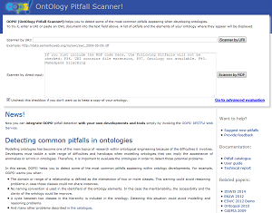
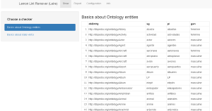

Tools
In this web, you will find the tools developed by the OEG.
OOPS! - OntOlogy Pitfall Scanner!
OOPS! (OntOlogy Pitfall Scanner!) helps you to detect some of the most common pitfalls appearing when developing ontologies. To try it, enter a URI or paste an OWL document into the text field above. A list of pitfalls and the elements of your ontology where they appear will be displayed.

OnToology
OnToology is a system to automate part of the collaborative ontology development process. Given a repository with an owl file, OnToology will survey it and produce diagrams, a complete documentation and validation based on common pitfalls. OnToology can handle vocabularies OWL and RDFS in RDF+XML and Turtle serialization.

Loupe - The Linked Data Explorer
Loupe is an online tool for inspecting the structure of datasets to understand the data, formulate effective queries, or detect quality issues. Starting from the high-level statistics, Loupe allows users to zoom into details down to the corresponding triples. Loupe includes 2+ billion triples from datasets including DBpedia (17 languages), Wikidata, Linked Brainz, Bio2RDF, etc.

Leire
Leire reads created lexicalizations (created, for instance, by Lemon Assistant) and implements several consistency checks for each design pattern, such as checking for multiple plural forms for nouns.

Lemon Assistant
Lemon Assistant allows you to create Lemon Patterns, the most typical patterns of the Lemon model. By using these patterns you create ontology 'lexicons', that is, lexicalizations of ontologies.